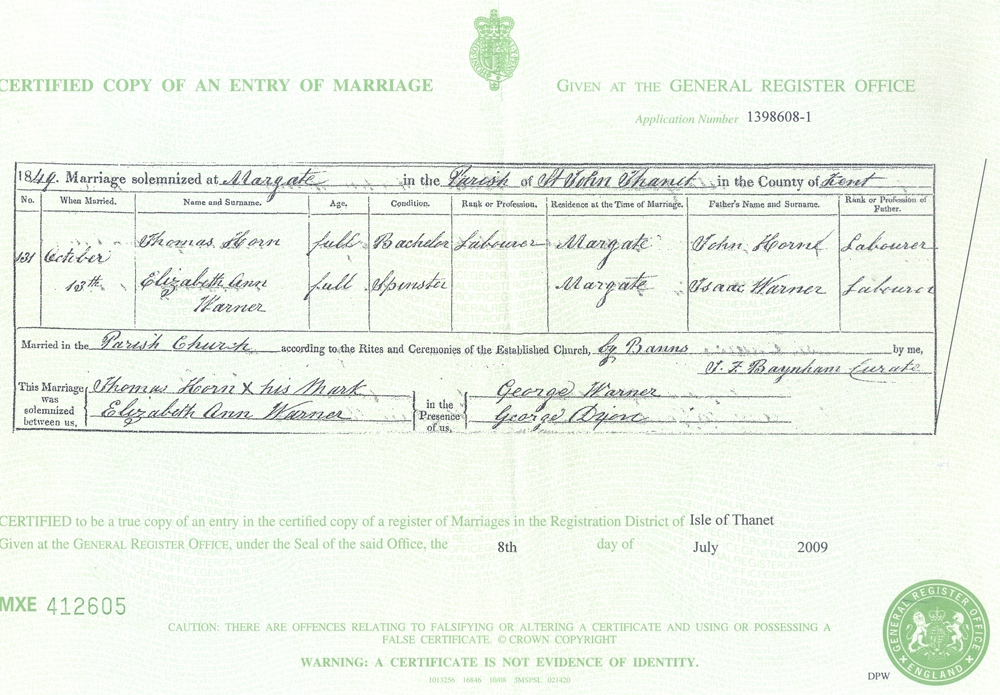
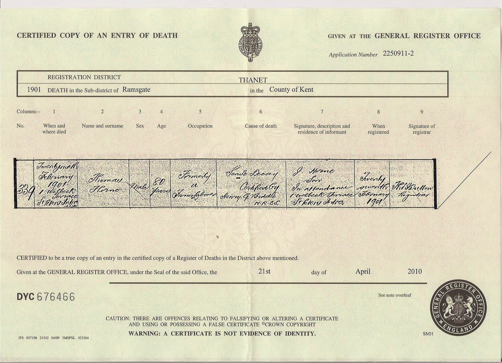
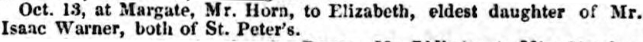
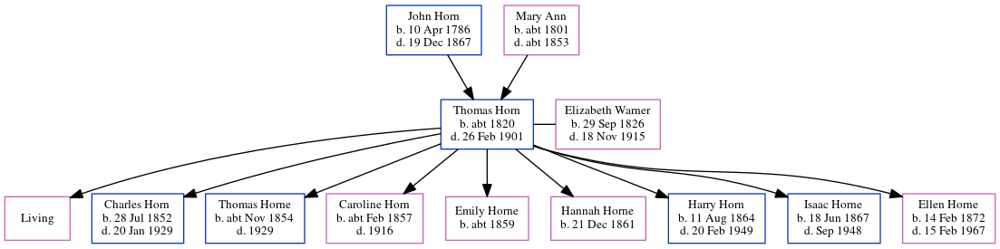

Thomas Horn c1820 - 1901
[ Home ] | [ Calendar ] | [ Surnames Index ] | [ Errors ] | [ Family History ]A farm bailiff, agricultural labourer and grocer and the child of John Horn (a labourer) and Mary Ann, Thomas Horn, the great-great-grandfather of Nigel Horne, was born in Margate, Kent, England c. 18201,2,3,4,5,6, was baptised there at St John The Baptist Church on 5 Nov 1820 and also married Elizabeth Warner (a general shopkeeper with whom he had 9 children: Elizabeth Alice, Charles, Thomas Warner, Caroline, Emily, Hannah, Harry, Isaac and Ellen Mary Ann, along with 1 surviving child) there on 13 Oct 18498.
During his life, he was living in Westgate Farm, Acol, Kent, England on 6 Jun 18411; at Bromstone, St Peters, Thanet, Kent on 30 Mar 185113; at Northdown in Margate on 2 Apr 187111; at Buddles Farm, Dane Court Road, St Peters, Thanet, Kent on 3 Apr 188114; at 194 Reading Street, St Peters, Thanet, Kent on 5 Apr 189112; and at 1 Welbeck Terrace, Reading Street, St Peters, Thanet, Kent in 189510 which is where he died on 26 Feb 19016,7 (senile decay). He was buried in St Peters, Thanet, Kent on 4 Mar 19019.
Parents
- John was born on 10 Apr 1786
- Mary Ann was born c. 1801
Children
- Charles was born on 28 Jul 1852
- Thomas Warner was born c. Nov 1854
- Caroline was born c. Feb 1857
- Emily was born c. 1859
- Hannah was born on 21 Dec 1861
- Harry was born on 11 Aug 1864
- Isaac was born on 18 Jun 1867
- Ellen Mary Ann was born on 14 Feb 1872
Citations
- 1841 England Census Online publication - Provo, UT, USA: The Generations Network, Inc., 2006.Original data - Census Returns of England and Wales, 1841. Kew, Surrey, England: The National Archives of the UK (TNA): Public Record Office (PRO), 1841. Data imaged from the National
- 1851 England Census Online publication - Provo, UT, USA: The Generations Network, Inc., 2005.Original data - Census Returns of England and Wales, 1851. Kew, Surrey, England: The National Archives of the UK (TNA): Public Record Office (PRO), 1851. Data imaged from the National
- 1871 England Census Online publication - Provo, UT, USA: The Generations Network, Inc., 2004.Original data - Census Returns of England and Wales, 1871. Kew, Surrey, England: The National Archives of the UK (TNA): Public Record Office (PRO), 1871. Data imaged from the National
- 1881 England Census Online publication - Provo, UT, USA: The Generations Network, Inc., 2004. 1881 British Isles Census Index provided by The Church of Jesus Christ of Latter-day Saints © Copyright 1999 Intellectual Reserve, Inc. All rights reserved. All use is subject to the
- 1891 England Census Online publication - Provo, UT, USA: The Generations Network, Inc., 2005.Original data - Census Returns of England and Wales, 1891. Kew, Surrey, England: The National Archives of the UK (TNA): Public Record Office (PRO), 1891. Data imaged from The National
- England & Wales, FreeBMD Death Index: 1837-1915 Online publication - Provo, UT, USA: The Generations Network, Inc., 2006.Original data - General Register Office. England and Wales Civil Registration Indexes. London, England: General Register Office. © Crown copyright. Published by permission of the Cont
- FreeBMD
- England & Wales, FreeBMD Marriage Index: 1837-1915 Online publication - Provo, UT, USA: The Generations Network, Inc., 2006.Original data - General Register Office. England and Wales Civil Registration Indexes. London, England: General Register Office. © Crown copyright. Published by permission of the Cont
- Familysearch.org (www.familysearch.org)
- 1895 Wilson's Directory
- 1871 England, Wales & Scotland Census - Findmypast (was age 50 and the head of the household)
- 1891 England, Wales & Scotland Census - Findmypast (was age 70 and the head of the household)
- 1851 England, Wales & Scotland Census - Findmypast (was age 30 and the head of the household)
- 1881 England, Wales & Scotland Census - Findmypast (was age 60 and the head of the household)
Media
Thomas Horn - Elizabeth Ann Warner - Marriage Cert

Thomas Horn - Death Certificate

South Eastern Gazette 23-10-1849

1861 England, Wales & Scotland Census Transcription - GBC-1861-0003550633
Kent, Canterbury Archdeaconry marriages - GBPRS/CANT/M/97023354/1
England & Wales marriages 1837-2005 - BMD/M/1849/4/AL/001066/023
Canterbury Baptisms Transcription - GBPRS-CANT-B-96215101
England Births & Baptisms 1538-1975 - R_884636603
Family Tree
Map
Generated by ged2site. Last updated on Jul 3, 2024
Known Issues
Listed in the residence for 1895, but spouse Elizabeth Warner is not
Census information missing between Census UK 1851 and Census UK 1871